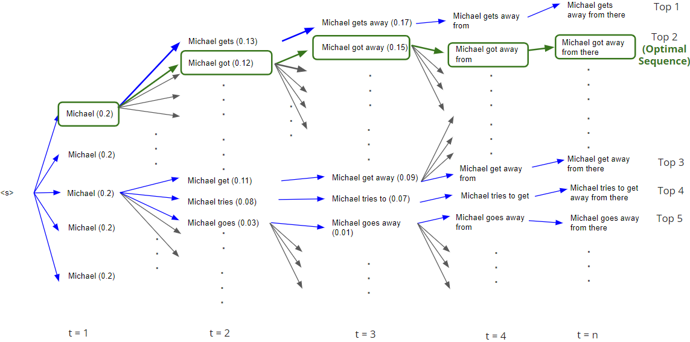

The NUS School of Computing Term Project Showcase (STePS) is one of the largest event, similar to Trade shows, aims to bring together and present selected student projects/products in the School of Computing (SoC) to facilitate peer learning, entrepreneurship and effective employment with modern flipped career-fair approach. In addition, STePS facilitates better assessment model through multi-party assessment of course projects. It's a festive yet serious class showcase, in which students present their projects in all aspects of computer science and information systems to the respective Faculty, Industry guests, Government agencies, Sponsors and Investors for grading, to connect with potential employers and to seek opportunities for further development of their work through collaboration with Industry and Investors.
Communication is a huge part of our way of life, grammatical errors can sometimes lead to misunderstandings while communicating especially in the absence of body languages. Credibility of the text may also seem less credible and impactful when the text is filled with grammatical errors. Grammatical errors have different types, these include using wrong tenses or spelling errors. A person generally has a tendency to make the same type of errors subconsciously. By evaluating the type of error a person has already made, we can decrease ‘False Negatives’ knowing that these are errors the person is prone to make. Hence, large language models (LLM) may be able to pick up these tendencies and adjust their outputs accordingly. Being able to pick up certain tendencies will allow us to adjust the model’s output to have more confidence in predicting the same type of tendencies. Our Seq2seq model has achieved this through “In-Context Learning (ICL)” and “Prefix Tuning”.
Our project introduces a novel approach to GEC tasks by integrating prefix tuning, a method not previously applied specifically to GEC tasks. Additionally, while ICL has been predominantly used in classification tasks such as sentiment analysis, our work extends its application to GEC. This innovation builds upon the existing framework of LLMs, enhancing their performance through strategic fine-tuning, prefix tuning, and the novel use of ICL. These advancements represent a significant shift in the application and capability of language models in the context of grammatical error correction.
We assessed the performance of the baseline model using large language models (BERT, BART, T5, ChatGPT), all fine-tuned for GEC tasks. The best-performing model was ChatGPT, which achieved a Levenshtein Distance of 7.62. Experiments conducted with in-context learning and prefix tuning show that prefix tuning is more effective. We also implemented three evaluation metrics. Based on the ERRANT score, the hyperparameter-tuned T5 with prefix could potentially rank 5th in the BEA 2019 (LR track). Further exploration with beam search has shown that it can perform better than the ChatGPT model.
Let ùë∫ = {ùíî‚ÇÅ, ùíî‚ÇÇ, ‚Ķ, ùíî‚Çô} represent the sentences in the dataset, these sentences contains grammatical errors that needs to be corrected. Let ùë™ = {ùíÑ‚ÇÅ, ùíÑ‚ÇÇ, ‚Ķ, ùíÑ‚Çò} be the set of prior corrections applied to the subset of these sentences, ùíÑ·µ¢ is the corrected instance/sample. Let ùêå represent the model being trained, ùë™·µ¢ refers to the set of corrected instances/samples used as context, and ùë∫·µ¢‚Çä‚ÇÅ represents the subsequent target sentence.
Assuming ùëÇùëüùëéùëêùëôùëí(ùë∫·µ¢‚Çä‚ÇÅ) is true and the ground truth for ùë∫·µ¢‚Çä‚ÇÅ: Hypothesis: ùë¥(ùë™·µ¢) → ùë∫‚Äô·µ¢‚Çä‚ÇÅ ‚âÖ ùëÇùëüùëéùëêùëôùëí(ùë∫·µ¢‚Çä‚ÇÅ)
By feeding a few instances/samples into the model and train it with corrections as context, subsequent sentences can adapt to similar errors. This is due to the assumption of consistent patterns of mistakes, which is inherent to the writing habits of the same author in a given essay.
Task: Develop a Seq2seq model that can identify and perform accurate grammatical corrections to in written text. Using the Write and Improve (W&I) dataset along with its Locness annotations, Seq2Seq models are implemented with in-context learning and/or prefix tuning for enhanced model accuracy.
Input: ùëø = {ùíô‚ÇÅ, ùíô‚ÇÇ, ‚Ķ, ùíô‚Çñ}, ùíô·µ¢ is the ùíä-th token in the input sentence sequence and ùô† is length of ùëø.
Output: ùíÄ = {ùíö‚ÇÅ, ùíö‚ÇÇ, ‚Ķ, ùíö‚Çï}, ùíö·µ¢ is the ùíä-th token in the corrected sequence and ùôù is length of ùíÄ.
The length of ùëø and ùíÄ may defer due to insertion or deletion of tokens.
An example of an incorrect setence (S) followed by its corrected annotations (A) is as follows:
S Nice i appreciate it
A 1 2|||M:PUNCT|||, I|||1|||-NONE-|||0
A 4 4|||M:PUNCT|||.|||1|||-NONE-|||0
Where after applying the corrections, the sentence becomes:
Nice, I appreciate it.
The annotations mean that the token at position 1 should be replaced with a comma, and the token at position 4 should be replaced with a period, and M stands for the type of edit (M:PUNCT), and the last column is the confidence score.
Figure 2: Distribution of data featuring (a) different splits of the dataset, (b) total number of edits and (c) sentence length.
Figure (a) shows the distribution W&I dataset comprising a total of 43,000 sentences, segmented into 34,000 training samples, 4,000 validation samples, and 4,000 test samples. The data is categorized into different proficiency levels based on the Common European Framework of Reference for Languages (CEFR), reflecting varying degrees of language complexity. These categories are labeled as A (Beginner), B (Intermediate), C (Advanced), and N, which consists of sentences extracted from essays written by native speakers. This structure facilitates targeted language learning and assessment at appropriate difficulty levels.
Figure (b) observes that the majority of sentences underwent fewer than 10 edits. Interestingly, the number of edits applied to a sentence is primarily influenced by the correctness of the content rather than its length. This means that shorter sentences can sometimes require more edits than longer ones, indicating that the need for corrections is not directly proportional to sentence length. This insight highlights the importance of focusing on the quality of the sentences rather than their size when editing.
Figure (c), which illustrates the distribution of sentence lengths, shows that it is not normalized, which influences the nature of the edits required. A significant portion of the sentences are shorter than 30 words, which reduces the need for contextual corrections, as shorter sentences generally present fewer contextual complexities. Additionally, there is a noticeable trend where the length of the sentences tends to increase in the C_train category, which corresponds to the advanced level. This pattern suggests that as proficiency improves, sentences not only become longer but may also require more sophisticated corrections to address higher-level language nuances.
Figure 3: Feature Engineering Analysis: (a) Distribution of word-based Tokens, (b) Distribution of character-based Tokens, and (c) Comparative Analysis of Character-Based vs. Word-Based Tokens.
Our feature engineering reveals that the standard deviation and average token count for character-based tokens are higher than those for word-based tokens. This could be attributed to the fact that character-based vocabularies tend to be smaller, particularly in languages with rich morphological structures or in datasets featuring a wide range of unique words, where word-based vocabularies expand significantly. Moreover, character-based tokenization may not yield optimal results in languages other than English, as it lacks the morphological sensitivity required to effectively parse and understand the nuances of different linguistic systems.
The optimal approach for Seq2Seq models involves integrating both word-level and character-level processing techniques. Methods like byte-pair encoding (BPE) or subword tokenization offer a balanced solution, capturing the strengths of both approaches. These methods efficiently bridge the gap between the granularity of character-based models and the contextual awareness of word-based systems. This hybrid strategy enhances the model's ability to handle a variety of linguistic inputs effectively, making it well-suited for complex language processing tasks.
Figure 4: Error analysis: (a) training set ABC distribution (text sentences), (b) training set ABCN (text sentences with native essays).
Our EDA explores the W&I Locness' largest dataset ABC and ABCN which varies in liguistic levels. Dataset ABC contains only text sentences, while dataset ABCN contains text sentences and native essays written by college students. The analysis indicates that the most frequent type of "error" detected is actually the absence of errors ('noop' or no-operation), suggesting that the model is often tasked with processing correct sentences rather than correcting them. Following this, punctuation mistakes ('punct') rank as the next most common type of error. This pattern highlights a significant opportunity for refining the model's training focus, particularly in enhancing its capability to identify and correct punctuation errors effectively, thereby improving overall sentence accuracy.
We therefore propose to enhance the model's training by incorporating additional punctuation correction tasks, using additional dataset.
Figure 5: Depiction of (a) In-context Learning (ICL) and (b) Prefix Tuning in the Seq2Seq model.
The current landscape reveals a gap in applying prefix tuning specifically for GEC tasks. Similarly, ICL has not been utilized for GEC, as it is typically employed in classification tasks such as sentiment analysis. In contrast to the common use of LLMs where questions are used as prompts, ICL adopts statements as prompts. Historically, LLMs have been predominantly utilized for translation or summarization tasks. The novelty of this approach lies in leveraging the existing capabilities of LLMs but enhancing their performance through specialized techniques such as fine-tuning, prefix tuning, and ICL. This integration not only addresses specific challenges in GEC but also pushes the boundaries of what is achievable with current language model technologies.
The models employ few-shot learning, where they efficiently learn from a limited number of examples. By presenting the model with a few instances of grammatical errors and their corresponding corrections, it can effectively generalize these correction patterns to new, unseen sentences. This approach enables the model to rapidly adapt to specific error types and correction patterns without the need for extensive retraining. Additionally, this method supports personalized error correction. The model can learn from the specific corrections applied to common mistakes or particular stylistic preferences in an individual's writing, tailoring its responses to better meet the user's needs.
Prefix tuning is a method where a sequence of task-specific, continuous vectors is appended to the beginning of the input as a prefix. This technique allows for optimization of only the prefix parameters, which are then integrated into the model's hidden states across all layers, allowing the input sequence tokens to interact with these virtual tokens. This approach significantly reduces the total number of parameters needed—by up to a thousand times less than what is required for fully fine-tuning a model. It also facilitates the use of a single large language model across multiple tasks. However, in the context of GEC, this method faces specific challenges. GEC often relies on its own pre-trained data, which might not align perfectly with the ground truth annotations used for training, potentially affecting the accuracy and relevance of the corrections.
Our project utilized multiple models, with an initial baseline established at the Intermediate Update report. These models, alongside their tokenizers, were initially sourced from a public library and were subsequently fine-tuned to better suit our specific requirements.
In terms of coding, the team employed multiple evaluation metrics that were both used previously and newly suggested, implementing these based on insights from a 2023 GEC survey. Additionally, various tuning strategies such as fine tuning, prefix tuning, and beam search were applied to optimize model performance.
For evaluation, we referenced the baseline for model fine-tuning from the BART repository. This served as a starting point for our experiments, which involved different models that were implemented and originally coded by our team. These efforts were geared towards refining our models' capabilities to more accurately address the nuances of grammatical error correction.
Table 1: Experimented models and rationale.
| Models Tested | Experimented on | Rationale |
|---|---|---|
| BERT encoder and decoder | Fine tuning Original data only |
BERT designed with pre-train deep bidirectional representations by jointly conditioning on both left and right context in all layers. BERT encoder can be used to identify errors effectively. Decoder was adapted to follow BERT format |
| BART | Fine tuning, prefix tuning, ICL Original and additional data |
BART combines both an encoder (like BERT) and a decoder (like GPT), enabling it not only to understand text but also to generate or modify text based on the input. Possibly more versatile than BERT encoder and decoder |
| ChatGPT3 model | Fine tuning, prefix tuning, ICL Original and additional data |
Chatgpt corpus is extremely large compared to other models because it uses data from the internet → board style of writing Chatgpt is also very capable in generating texts |
| Text-to-text Transfer Transformer (T5) | Fine tuning, prefix tuning, ICL Original and additional data |
Smaller model compared to the rest. T5 is a text to text transformer Since T5 is prefixed with task-specific identifier, is a good candidate for us to prefix tune |
We experimented with multiple models, including BERT, BART, ChatGPT3, and T5, each fine-tuned for GEC tasks. The models were trained on the W&I dataset, with additional data incorporated to enhance their performance. The models were evaluated based on their Levenshtein Distance, which measures the number of insertions, deletions, and substitutions required to transform the model's output into the ground truth. The lower the Levenshtein Distance, the more accurate the model's predictions.
Our baseline Deep Learning Encoder-Decoder model was developed to address Grammatical Error Correction (GEC). However, the initial outcomes have highlighted areas for potential enhancement. The model's performance, as indicated by a low GLEU score, suggests significant room for improvement:
For this project, we used two methods of evaluation, the Levenshtein (or minimum edit) distance for ICL models and best practices: M2 Score, GLEU Metric, ERRANT for tuning.
In our project, models employing ICL are evaluated using the Levenshtein distance metric, which calculates the minimum number of single-character edits required to transform one word into another, with each edit (insertion, deletion, or substitution) carrying a cost of one. This method, which we first encountered in course CS4248, focuses specifically on character-level changes, highlighting the detailed modifications necessary for error correction. Importantly, ICL guides the model without altering its weights, maintaining the integrity of the original model architecture while adapting it for specific correction tasks.
Table 1: Levenshtein distance results of baseline vs new implementations.
| Models Tested | Levenshtein distance |
|---|---|
| Baseline | 69.9 |
| BERT Encoder and Decoder | 425.07 |
| ChatGPT3 model | 13.6 |
| Text-to-text Transfer Transformer (T5) | 10.65 |
| BART | 14.6 |
All the models we tested outperformed the baseline; however, BERT was an exception. BERT's architecture, primarily designed for tasks that involve understanding the context within texts rather than transforming one sequence into another, lacks specific mechanisms that are essential for sequence-to-sequence tasks. Unlike more conventional choices for such tasks like T5 or BART, using BERT as both encoder and decoder is atypical and might contribute to its underperformance in our tests. This highlights the importance of selecting model architectures that align with the specific requirements of the task at hand.
Table 2: Fine-tuned Levenshtein distance results of ChatGPT model before and after tuning.
| Before | After |
|---|---|
| 13.6 | 7.6 |
In addition, our team went on to fine tune the ChatGPT model utilizing all its pre-existing knowledge solely for GEC task, which resulted in our best model in this project, based on LD metric. Leveraging a broad and diverse pre-existing dataset, this model capitalizes on its extensive base of linguistic knowledge, which is essential for effectively identifying and correcting grammatical errors. Through fine-tuning, we have tailored ChatGPT specifically to excel in GEC tasks, enhancing its ability to understand and rectify complex grammatical issues. This specialized adaptation not only improves the model’s accuracy but also makes it exceptionally proficient in handling the nuanced demands of grammar correction, marking it as our most effective model in this project.
In our approach to tuning models for GEC tasks, we employ three "best practice" metrics: M2 Score, GLEU Metric, and ERRANT. These metrics are widely recognized in the field, with ERRANT typically used for the BEA 2019 test set, GLEU for JHU FLuency-Extended GUG (JFLEG), and M2 score for CoNLL-2014. Each of these metrics offers unique strengths and weaknesses, making the choice of the "best" metric contingent upon its correlation with ground-truth human judgments.
However, while ground-truth human judgments provide an intuitive benchmark for evaluating metric performance, their subjective nature warrants cautious interpretation. The reliability of these evaluations remains a topic of ongoing research, as the community continues to seek methods that can more objectively assess the effectiveness of evaluation metrics in GEC.
Table 3: M2, GLEU, and ERRANT metric scores for tuned BART and T5 models.
| Models | Dataset | Task Prefix | M2 Score | GLEU Metric | ERRANT |
|---|---|---|---|---|---|
| BART | Original | "Correct the grammar: " | 0.3890 | 0.7262 | 0.2004 |
| BART | Additional | "Correct the grammar: " | 0.3960 | 0.7225 | 0.2100 |
| T5 | Original | "Correct: " | 0.4341 | 0.7100 | 0.3707 |
| T5 | Additional | "Correct: " | 0.4804 | 0.7258 | 0.4316 |
| T5 | Original | "Correct grammar: " | 0.4123 | 0.7275 | 0.4762 |
| T5 | Original | "Rectify the grammatical errors: " | \ | 0.6530 | 0.4654 |
The primary metric used to evaluate the effectiveness of our models, including the top-performing T5 model on the original dataset with the prefix "Correct grammar: ", was the ERRANT metric, specifically utilizing the F0.5 score. This score places more emphasis on precision than recall, making it particularly suitable for assessing the accuracy of grammatical corrections where precision is more critical. By focusing on this metric, we ensured that the model's performance was measured in a way that prioritizes the correctness of the corrections it proposes, aligning with our objectives for high-quality grammatical error correction.
In Context Learning (ICL) significantly hinges on the quality and relevance of its pre-training corpus. Performance is highly correlated with term frequencies observed during pre-training; for domain-specific tasks, this necessitates the use of a domain-specific corpus to ensure effective performance. Moreover, ICL generally reduced effectiveness with longer text sequences, and in certain cases, it may not adequately address specific tasks, making further fine-tuning of the pre-trained model essential to boost performance.
Prefix Tuning also presents certain challenges. The effectiveness of this approach relies heavily on the use of highly relevant, task-specific prefixes during fine-tuning. Identifying effective prefixes can be time-consuming and demands extensive human intervention through iterative experimentation. Additionally, successful implementation of prefix tuning requires access to sufficient task-specific training data, which can be a substantial preparatory burden.
Our analysis highlights the limitations of greedy decoding, which, by selecting the most probable next word at each step, may not always yield the most optimal sequence.
For instance, in our model outputs, the sentence:
"Michael get away from there."
was generated through greedy decoding, demonstrating an incorrect sequence. The correct
sequence, as per the ground truth annotation, should be:
"Michael got away from there."
This example underscores the need for alternative decoding strategies that can better
approximate the ground truth and enhance the overall accuracy of generated sequences. We explored beam search as a potential solution to this challenge, aiming to identify the most optimal sequence
by considering multiple candidates at each decoding step.
Table 4: Top 5 prediction output by best tuned T5 model using beam search.
| Model | Prediction Ranking | Generated Sentence | Levenshtein Distance | Remarks |
|---|---|---|---|---|
| T5 | 1 | Michael gets away from there. | 3 | Top Sequence |
| T5 | 2 | Michael got away from there. | 1 | Most Optimal |
| T5 | 3 | Michael get away from there. | 2 | |
| T5 | 4 | Michael tries to get away from there. | 11 | |
| T5 | 5 | Michael goes away from there. | 3 |
Our observations indicate that the top generated sequence from the model is not always the most optimal. For example, while the first generated sequence was ranked highest by the model, it was the second sequence that proved to be the most optimal based on Levenshtein Distance. This insight supports the use of beam search as a more effective decoding strategy. Beam search can explore a broader set of possible sequences by maintaining multiple hypotheses at each step, thereby increasing the likelihood of finding the most accurate sequence as compared to the often suboptimal results produced by greedy decoding.
Figure 6: Beam search decoding strategy, exploring multiple hypotheses at each step to identify the most optimal sequence.
The diagram illustrates the process of beam search in generating the sentence "Michael gets away from there." Each node represents a word generated at each time step (t=1 to t=n), with the probabilities shown in parentheses. Beam search explores multiple paths (branches), as indicated by the different arrows, effectively widening the search space compared to greedy decoding. This method maintains several potential sequences at each step and extends them based on their cumulative probabilities. The image shows how the model transitions from "Michael" to more complete phrases, ultimately leading to the ranking of top sequences. Notably, the second sequence, "Michael got away from there," marked as the Top 2 (Optimal Sequence), was identified as the most accurate by Levenshtein distance, demonstrating the effectiveness of beam search in identifying optimal sentence structures over simpler greedy approaches.
Figure 7: Relationship between average Levenshtein Distance and number of beams used in beam search.
Our analysis shows relationship between the average Levenshtein Distance (LD) and the number of beams used in the beam search, specifically examining the minimum LD across the top 5 beams. As the number of beams increases from 1 to 5, there is a noticeable decrease in the average LD, indicating an improvement in model performance. This trend supports the hypothesis that expanding the search space by considering more top beams allows the model to explore more potential sequences, thereby increasing the likelihood of finding more optimal solutions. While using more beams can be computationally demanding, the results with five beams are comparable to those of advanced models like ChatGPT, suggesting a strategic balance between computational expense and performance enhancement. This highlights the effectiveness of utilizing a larger search space, despite the inherent computational costs.
Throughout our research, models exhibited improved performance with various tuning approaches, although the integration of In-Context Learning (ICL) with either prefix tuning or fine-tuning did not lead to better outcomes. This suggests that these methodologies might not complement each other effectively, nor enhance the model's grammatical accuracy or flexibility.
To refine our tuning strategies, we incorporated three additional metrics: M2 Score, GLEU Metric, and ERRANT, employing Minimum Edit Distance specifically for evaluating ICL.
Additionally, we explored the utilization of beam search to identify optimal sequences, which has shown promising results and provides a good direction for future research. The use of the T5 model, with prefix and hyperparameter tuning, notably ranked 5th in the BEA 2019 LR track, highlighting its effectiveness.
Overall, the result of ranking our models on its performance on the GEC task is as follows:
To effectively extract and generalize grammatical information from LLMs, fine-tuning them on individual user essays has proven beneficial. ICL is particularly adept at capturing unique grammatical error patterns specific to each user, due to the personalized nature of errors. Regarding the performance of ICL and Prefix Tuning in GEC tasks, our experimental data indicates that Prefix Tuning generally outperforms ICL. This can be attributed to the fact that ICL requires an LLM trained on a highly diverse dataset, whereas Prefix Tuning can directly enhance GEC performance even without extensive dataset diversity.
In addition to traditional performance metrics like Minimum Edit Distance, which we have explored in academic lectures, our research incorporates several novel indicators from the GEC2023 survey. These new metrics have not only broadened our analytical tools but also contributed to our models' rankings in the BEA 2019 competition. This comprehensive approach allows us to more accurately measure and enhance the effectiveness of our grammatical correction models.
Figure 8: Photo of some team members with course Professor Kan Min-Yen (left) and project mentor Yisong Miao (right) after the event.
We are thankful for our mentor, Yisong Miao for his invaluable guidance and support throughout this project. His insights and suggestions have been very helpful in shaping the direction of our project. Specifically, towards his introduction on the concepts of In-Context Learning and Prefix Tuning, which have become part of our project's approach. Yisong's mentorship has been truly beneficial, and we are privileged to have had the opportunity to learn from his expertise.
We are also deeply appreciative of the valuable notes and lessons provided by Professors Christian von der Weth and Min-Yen Kan. Their insightful lectures and materials have significantly increased our interest in NLP and enhanced our understanding of the field, thereby aiding us in the development of our baseline models.